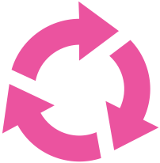

Randomly create a network of audio processes in a feedback configuration. Click on individual modules or layers to bypass.
Enable and disable particular node types with the checkboxes before creating the network to curate the randomised selection of nodes.

Modules to choose from when creating the network: